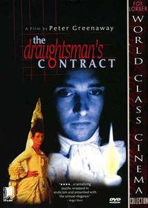
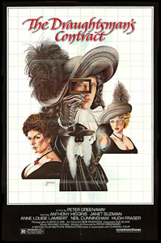
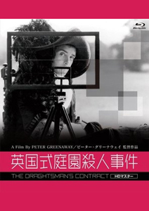
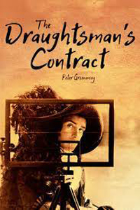
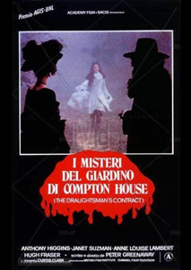
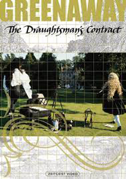

Originally produced for Channel 4, the film is a form of murder mystery, set in rural Wiltshire, England in 1694 (during the reign of William III and Mary II). The period setting is reflected in Michael Nyman's score, which borrows widely from Henry Purcell, and in the extensive and elaborate costume designs (which, for effect, slightly exaggerate those of the period). The action was shot on location in the house and formal gardens of Groombridge Place. The film received the Grand Prix of the Belgian Film Critics Association.
Mr. Neville



The film was inspired when Greenaway, who trained as an artist before becoming a filmmaker, spent three weeks drawing a house near Hay-on-Wye while holidaying with his family. Much like Mr. Neville in the final film, every day he would work on a particular view at a set time, to preserve the lighting effects while sketching from day to day. The hands shown drawing in the film are Greenaway's own, as are the completed drawings. The original cut of the film was about three hours long.
Some anomalies in the longer version film are deliberate anachronisms: the depiction of the use of a cordless phone in the 17th century and the inclusion on the walls of the house of paintings by Greenaway in emulation of Roy Lichtenstein which are partly visible in the released version of the film. The released final version provides fewer explanations to the plot's numerous oddities and mysteries. The main murder mystery is never solved, though little doubt remains as to who did it. The reasons for the 'living statue' in the garden and why Mr. Neville attached so many conditions to his contract were also more developed in the first version.
The visual references for the film are paintings by Caravaggio, de La Tour, Rembrandt, Vermeer and other Baroque artists and this gives the film a "painterly quality". Greenaway also said: "I consider that 90% of my films one way or another refers to paintings. Contract quite openly refers to Caravaggio, Georges de La Tour and other French and Italian artists".


